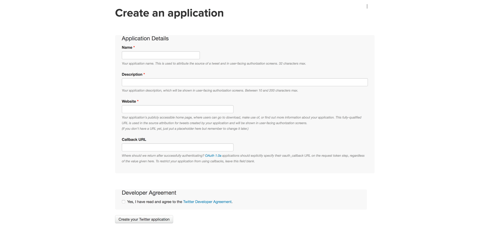
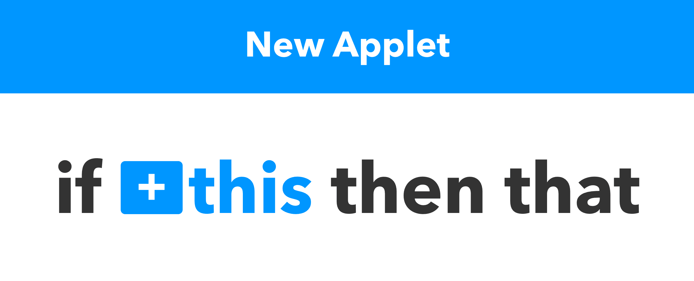
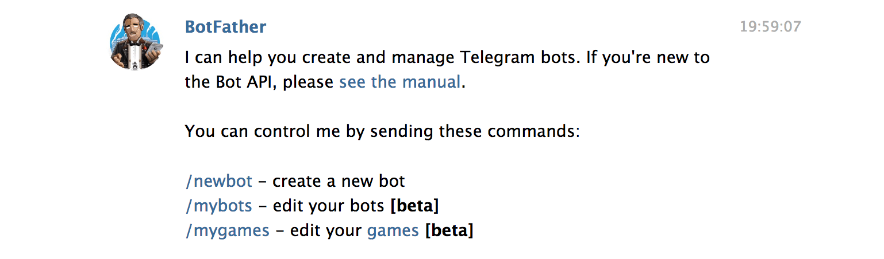
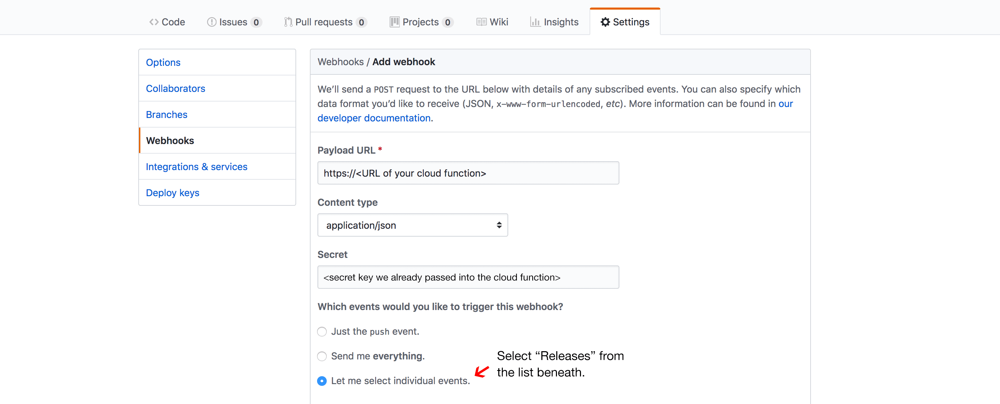

timothyfitz.com/2009/02/09/what-webhooks-are-and-why-you-should-care/“Webhooks are user-defined HTTP callbacks.”
I won't pay for a server regularly just to fiddle around with some webhooks now and then.
A word that suggests an idea that is known to be wrong.
<service>.addEventListener(
'<webhook>',
<lambdaFn>
);
What bothered me …
Either use the official Twitter Widget and load a lot of crap.
Or maintain a service that proxies the Twitter API.
Serverless + IFTTT to the rescue!!1
Btw: since the THAT in IFTTT can be a webhook, literally everything on this planet can trigger your cloud function! 🌍
A twitter app to get access to the API …
A cloud function …
We'll use the serverless framework here …
A S3 bucket …
Allow the function to write a file into the bucket …
Allow the world to read the tweets …
Set up the cloud function …
Set up an applet on IFTTT …
Eventually the tweets arrive …
Which we can use for a static twitter widget …
For this example I use ClaudiaJS, because it makes things easy.
Also it brings the BotBuilder, which makes things even easier!
A new Telegram bot. So let's go to the Botfather …
A cloud function …
That's it! The ClaudiaJS-CLI takes care of the rest. 😲
… don't forget to pass it the bot's secret key though!!
Demo time!
Imagine sending a newsletter containing the changelog on every release.
The only thing you have to do …
Releasing!
Obviously semantic-release writes the changelog for you. 😏
We'll use the serverless framework here again …
Gathering data from the request payload …
Fetching more data, setting up the newsletter & sending it into the world.
After deploying the function we can set up GitHub …
That's it. Demo time!
Webhooks are cool.
Cloud functions are also cool.
Combine both for a lot of profit & win.